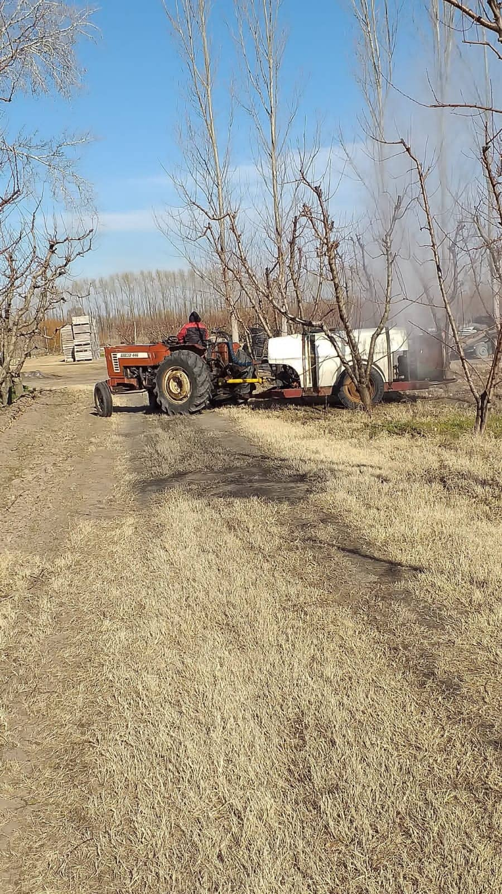
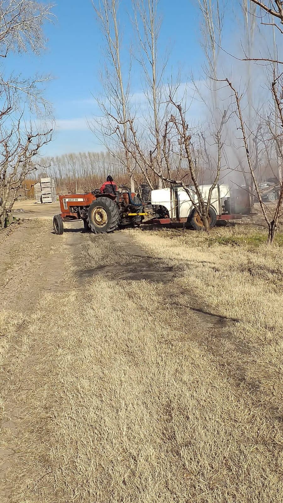

HELADAS
Una vez que comienza a brotar en flor la planta, se le trata de dar humedad "artificial"a la chacra, es decir, bajo el riego de manto o aspersión. Esto se realiza para que tenga una buena humedad y que los fríos no sean tan intensos. Se trata de compactar la tierra, de que no esté movida y que no esté limpia. En las noches de peligro de heladas, estamos en alerta y esperamos durante toda la noche tomando diversos recaudos como mirar constantemente las temperaturas en diversos termómetros que tenemos esparcidos por la chacra y hacemos un seguimiento en meteorología para así tener un panorama de lo que se nos avecina. En nuestro caso, que solo utilizamos un método mediante fuego con cubiertas, aceite, combustible y leña, tenemos una pequeña ventaja y es que se puede prender estando a temperaturas más bajas que en otras chacras que cuentan con riego por aspersión; estas tienen que prender cuando está en 0 grado y solamente soportan hasta 7 grados bajo cero. Nosotros, teniendo el material y mano de obra suficiente, comenzamos a prender cuando la temperatura está alrededor de 2 grados bajo cero y podemos soportar hasta 10 o 12 grados bajo cero.
RALEO
Cuando comenzamos a realizar este trabajo, todavía estamos apeligrando de las heladas pero igualmente, a las variedades que crecen primero le comenzamos a dar su raleo. A estas se las ataca con mayor rigor puesto que son frutas tempraneras, es decir, que no tienen demasiado crecimiento y genera poco calibre. Para ser más claro, en una rama donde hay veinte duraznos por ejemplo, nosotros lo que hacemos es tirar la mayoría y dejar solo tres de estos, esto lo que hace es que genere un mayor calibre. El raleo se hace a cada una de las plantas, a todas por igual, de forma manual, recorremos todo el árbol minuciosamente para que no quede amontonamiento de fruta, para que pueda crecer, tener luz, y se pueda curar de manera correcta. El raleo y las curas realizadas de forma adecuada, nos da como resultado una buena mercadería y una cosecha fructífera.


PODA
Nosotros debemos esperar a que la planta esté limpia y eso se genera con diversas curas o fuertes vientos. Una vez que esto sucede, se comienza a podar, dejando lo que vendría a ser el "material nuevo" de la planta y formamos la copa del árbol (en nuestro caso), sino en espalderas. Esta forma de copa se realiza sacando el material de sobra de adentro para que se pueda abrir y así tener una buena luminocidad, entrada de sol y viento para que se pueda curar y fumigar de manera correcta. En caso de no haber material "viejo", se ralean estas ramas y se dejan las mejores.
COSECHA
Se realiza un seguimiento minucioso para que no se pase de maduréz la fruta y que tenga un tamaño acorde. Las ventas se realizan con fruta más bien verde, ya que si está madura, de aquí a que se hace todo el trabajo, el embalaje y llega a la góngola, ya llega excesivamente madura. Se junta la fruta utilizando escaleras y recolectores, una vez lleno éste, se deposita en los bines y recién aquí la embalamos, descartamos y clasificamos en cajones para su posterior venta.
OTROS TRABAJOS
CURAS
Se realizan con una máquina que abarca dos mil litros, en éstos litros se realiza una mezcla de agua con diversos remedios según sea el propósito de la cura, ya sea para combatir los bichos, sarnilla, entre otras enfermedades de la planta. Esta máquina es tirada por un tractor y el tractorista debe ir con un traje y mascarilla debido a que los remedios son muy fuertes y son perjudiciales para la salud. Las curas se realizan por separado y en determinadas fechas, donde también éstas van a variar según el tiempo porque no se puede curar con lluvia ya que el agua lava el remedio y sería una cura perdida, en vano.
RIEGO
Las chacras tienen acequias por donde se redirige el agua para regar cada cuadro. Aquí tenemos que abrir boquetes (pequeñas entradas) para cada fila y con esto generamos un mejor riego a cada una de las plantas. A los riegos los hacemos acompañados de una pala y una horquilla puesto que con estas herramientas limpiamos y sacamos la mugre que suele traer el agua para así aligerar el paso de la misma. Hay dos tipos de riego, por manto (donde se inunda el cuadro) o el que realizamos nosotros que se denomina "abobedado" (donde se levanta unos 20 centímetro el centro de la fila y se le hace una leve caída hacia el tronco de las plantas).
 
